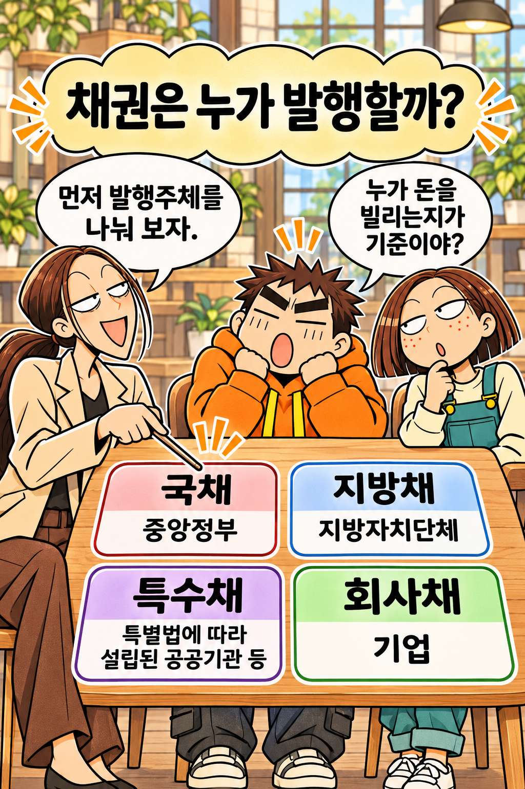
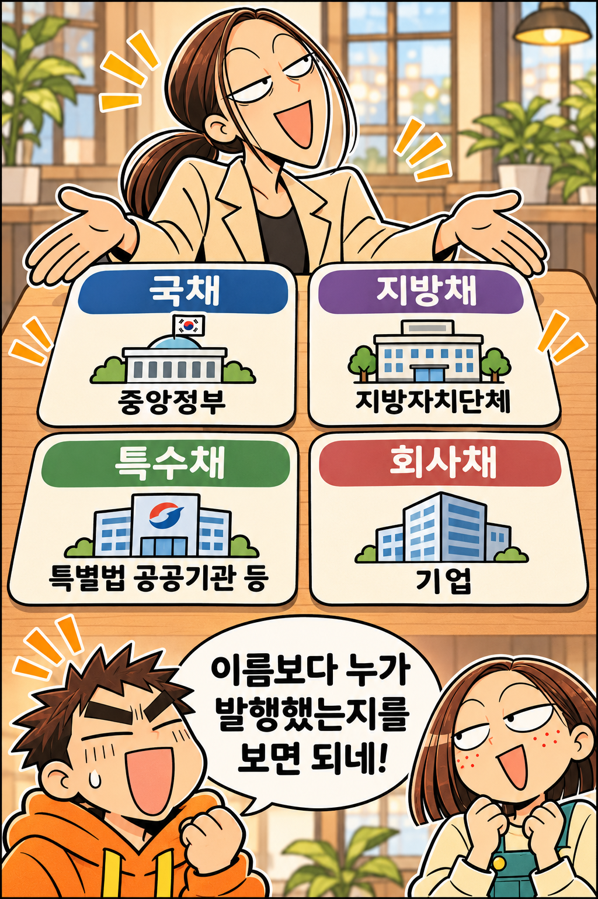
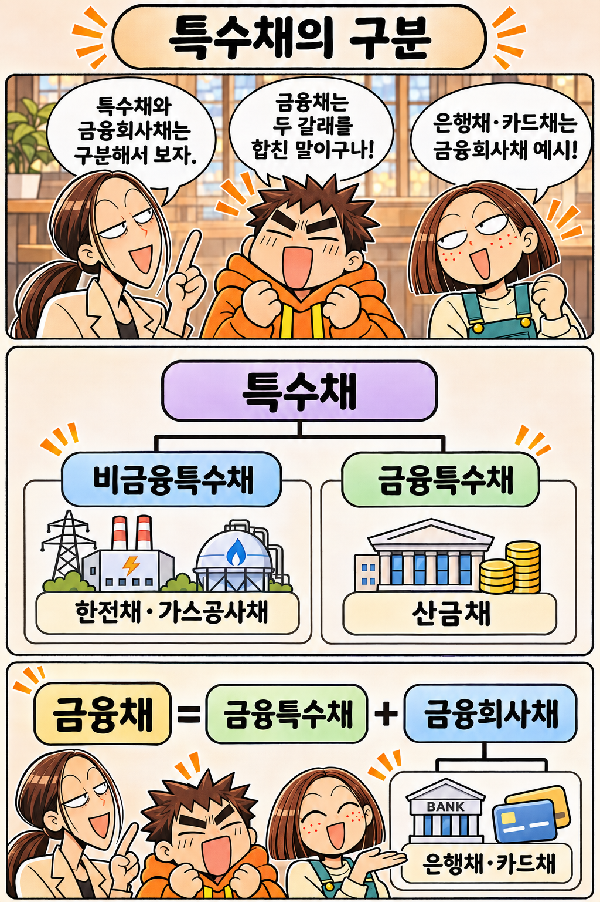
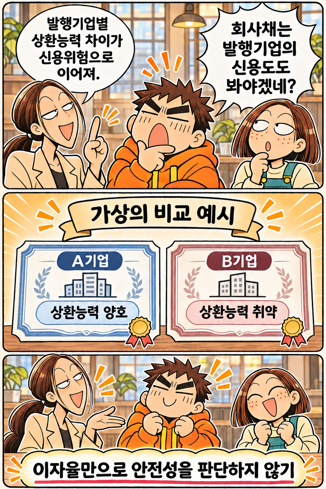
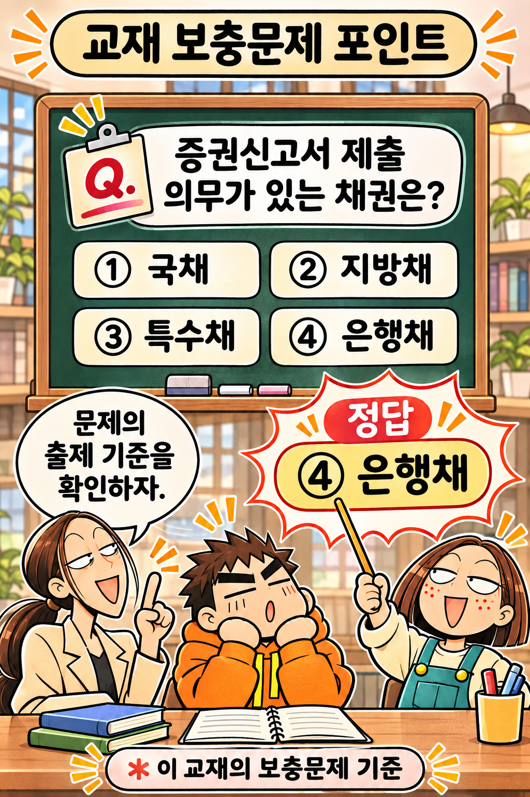
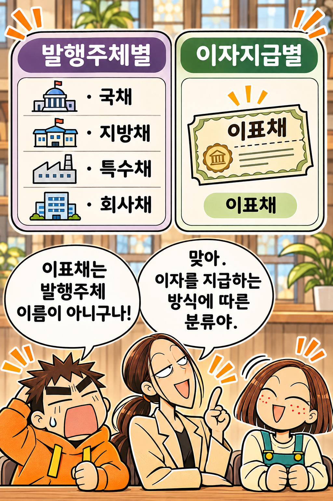

TOPIC 01 · 발행주체별 분류 · 완성
채권은 누가 발행할까?
원전 연결: 인쇄 pp.252–253 · PDF 물리 pp.1109–1110






개념 해설
채권은 발행주체에 따라 국채·지방채·특수채·회사채로 분류합니다. 교재에서는 특수채를 비금융특수채와 금융특수채로 나누며, 금융채에는 금융특수채와 금융회사채가 포함될 수 있다고 설명합니다. 은행채·카드채는 금융회사채의 예입니다.
회사채는 발행기업의 상환능력에 따라 신용위험이 달라집니다. 이표채는 발행주체가 아니라 이자 지급 방식에 따른 분류이므로, 한 채권도 서로 다른 기준으로 분류될 수 있습니다.
이 회차의 핵심
누가 발행했는지와 이자를 어떻게 주는지를 각각 확인합니다.다음 Topic
05-02 · 이자지급별 분류
누가 발행했는지와 이자를 어떻게 주는지를 각각 확인합니다.다음 Topic
05-02 · 이자지급별 분류